A 48-Experiment Benchmark on the Elliptic Bitcoin Dataset
Sajjad Shahali Ramsheh · DAUIN · Politecnico di Torino · s340464
← → to navigate · N speaker notes
Classify each Bitcoin transaction as illicit (money laundering, scam, ransomware) or licit (exchange, service, legitimate transfer) — using only 165 anonymous node features and the graph of transactions.
| File | Size | Content |
|---|---|---|
elliptic_txs_features.csv | 657 MB | 203,769 rows × 165 features (no header). Col 0 = txId, Col 1 = time_step, Cols 2–94 = local features, Cols 95–165 = aggregated neighborhood features. |
elliptic_txs_classes.csv | 3.2 MB | txId → class label. Values: 1=illicit, 2=licit, unknown=unlabeled. Encoded: 1→1, 2→0 in config. |
elliptic_txs_edgelist.csv | 4.3 MB | 234,355 directed edges (txId_source, txId_dest). Made undirected for GNN training by adding both directions. |
⚠️ Feature names not published by Elliptic — columns are anonymous. Only cross-model agreement via SHAP can validate signal robustness.
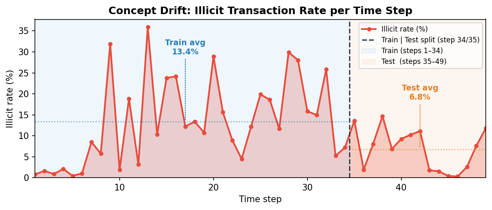
Illicit rate drops 11.6% (train) → 6.5% (test) — a 44% relative decline. Random split inflates all metrics by ~5–10 F1 points by leaking this future distribution into training.
| Paradigm | Training Data | Threshold Method | Key Constraint |
|---|---|---|---|
| Unsupervised | All train rows incl. unknown (136K) | F1-optimal on labeled train | contamination=0.10 |
| AE / OCSVM | Licit-only train rows (26,432) | F1-optimal on val steps 30–34 | Never see illicit during training |
| Supervised | Labeled train rows (29,894) | Default 0.5 | class_weight='balanced' |
| GNN | Full graph, supervised by train labels | Default 0.5 | Inverse-frequency CrossEntropy |
| Ensemble | Labeled train rows (29,894) | Grid search on val steps 30–34 | Threshold NOT tuned on train (leakage trap) |
class_weight='balanced' · GNN: inverse-frequency CrossEntropy · AE/VAE: train on licit-only · Unsup: contamination=0.1
| Method | F1 | AUC | Verdict |
|---|---|---|---|
| Isolation Forest | 0.021 | 0.172 | Random-level |
| Local Outlier Factor | 0.076 | 0.506 | Transductive only |
| One-Class SVM | 0.023 | 0.235 | Fails |
| IsoForest (structural) | 0.094 | 0.458 | Best classical |
| IsoForest (spectral K=50) | 0.056 | 0.407 | No signal |
| OCSVM (spectral K=50) | 0.061 | 0.391 | No signal |
| DOMINANT (Graph AE) | 0.212 | 0.669 | Best unsup graph |
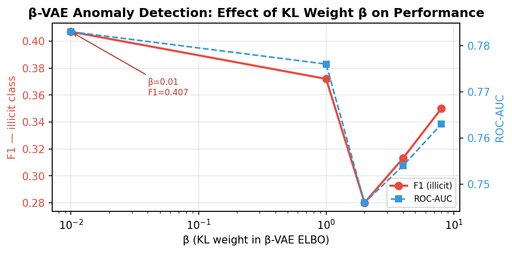
Lower β=0.01 wins — reconstruction-dominated. Higher β forces KL regularization which merges licit+illicit in latent space. Best unsupervised: F1=0.407.
165 tabular + 7 structural = 172 features total.
F1=0.8265 · AUC=0.9243 · AP=0.8031
7 features: in/out/total degree · clustering · avg_neighbor_degree · ego_density · OddBall deviation
| Model | Baseline | Tuned | Best params |
|---|---|---|---|
| GBM | 0.766 | 0.824 | n=245 depth=8 lr=0.121 |
| GraphSAGE | 0.541 | 0.688 | h=256 drop=0.45 lr=0.0038 |
| RandomForest | 0.801 | 0.797 | Near ceiling |
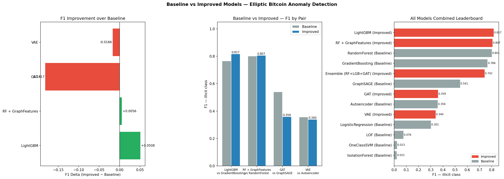
Round 1: LightGBM replaces GBM baseline (+5.1 F1). RF+graph features adds +0.6 F1.
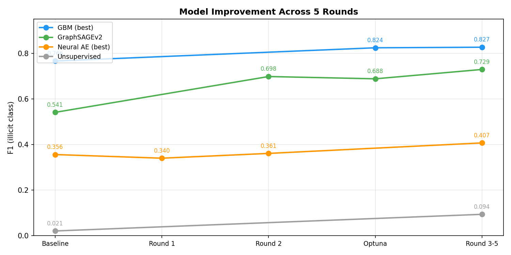
Each improvement round adds marginal gains on top of a strong baseline. GBM near ceiling after Round 1.
3-layer model captures placement → layering → integration steps in a money laundering flow
| Change | F1 gain | Why |
|---|---|---|
| Hidden 64→256 | +0.052 | More capacity |
| 2 layers → 3 layers | +0.038 | 3-hop AML chains |
| LayerNorm + self-loops | +0.068 | Stability at depth |
| Pseudo-labels | +0.031 | Denser neighborhoods |
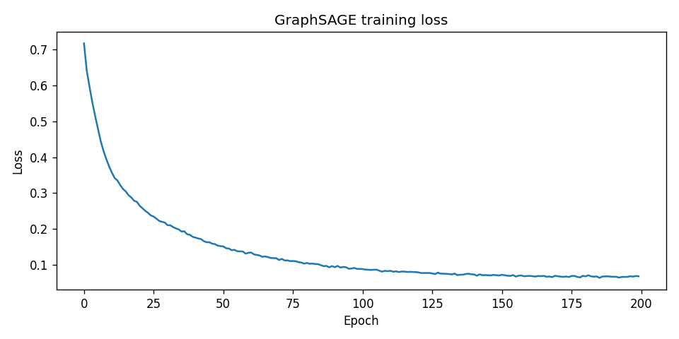
GraphSAGE training and validation loss — steady convergence, no divergence
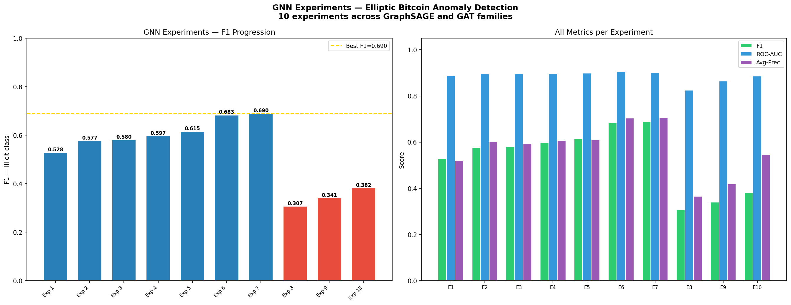
Exps 1–7: GraphSAGE depth/width/norm ablation. Exps 8–10: GAT family — attention consistently underperforms.
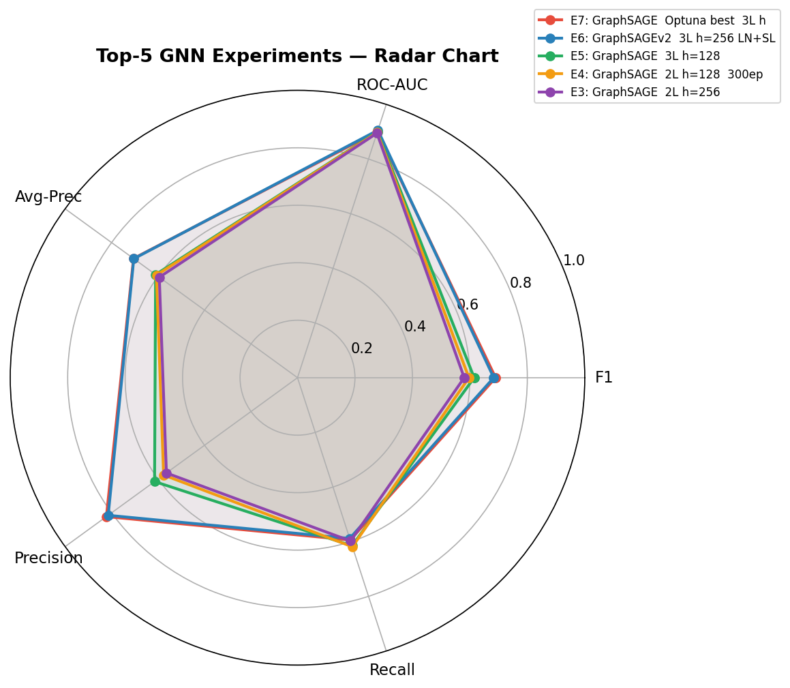
SAGEv2 dominates across all metrics. Best GAT (GATv2) F1=0.382 vs SAGEv2 F1=0.698 — avg degree 2.3 too sparse for attention.
Trained on licit-only transactions → learns to compress/reconstruct "normal" behavior. Theory: illicit txs should give high reconstruction error because the model never learned their patterns.
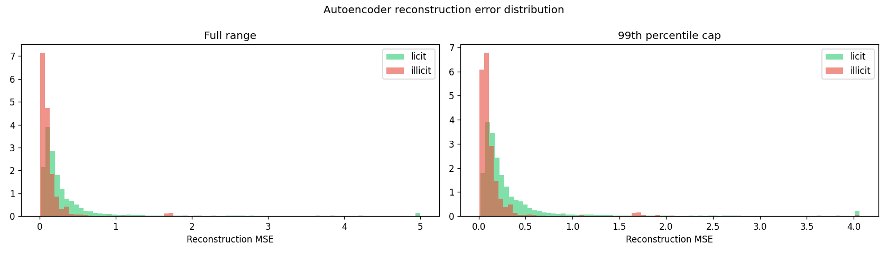
Orange (illicit) peaks at LOWER MSE than blue (licit) — confirms inversion. The two distributions overlap significantly, explaining the F1 ceiling.
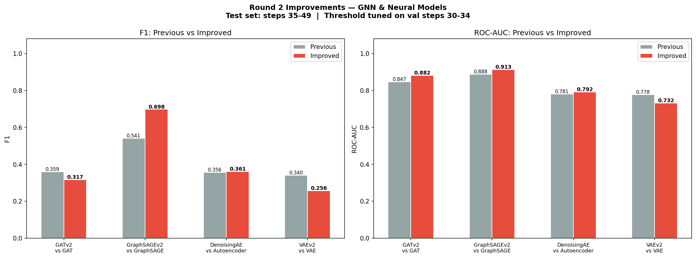
GraphSAGEv2 biggest jump (+15.7 F1). VAEv2 and GATv2 both regressed — ELBO score and attention mechanism both hurt on this dataset.
| Method | F1 | Key insight |
|---|---|---|
| Autoencoder (baseline) | 0.356 | Latent=32, standard MSE |
| VAE (β=1.0) | 0.340 | KL regularization hurts — merges classes |
| Denoising AE | 0.361 | Smaller latent=8, noise_std=0.1 |
| β-VAE (β=0.01) | 0.407 | Near-zero KL ≈ standard AE → best |
| DOMINANT (Graph AE) | 0.212 | Uses graph edges + attr jointly |
| LSTM-AE | 0.122 | Per-timestep aggregate — too coarse |
SHAP Beeswarm — Random Forest
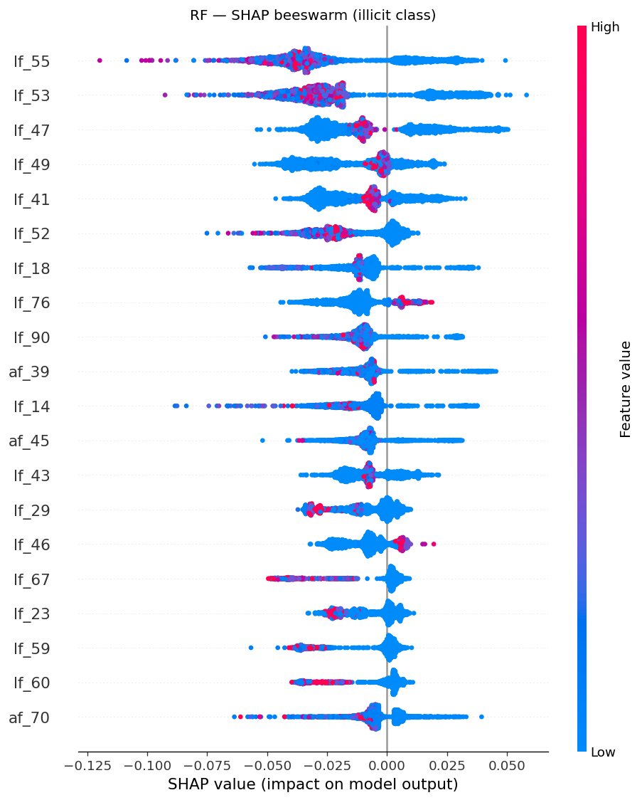
SHAP Beeswarm — Gradient Boosting
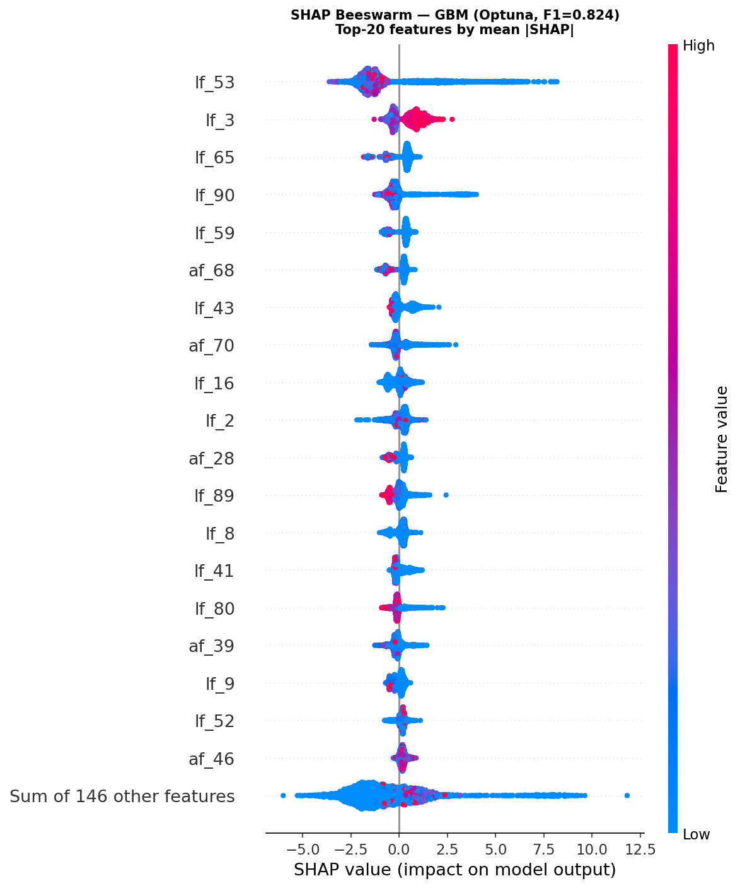
Waterfall — single illicit tx (RF)
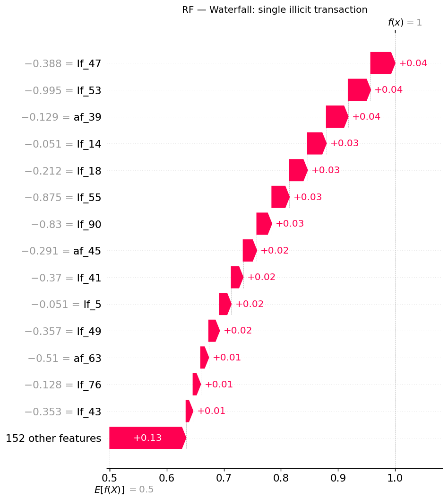
GNN Gradient Attribution
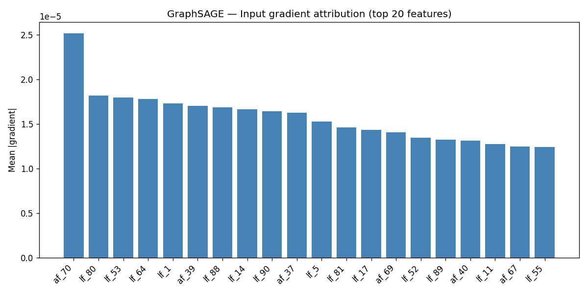
Top-20 in all three model families:
af_70 is a neighborhood-aggregated feature → confirms graph signal is real across all model families.
af_70 is a neighborhood-aggregated feature, confirming graph structure matters.
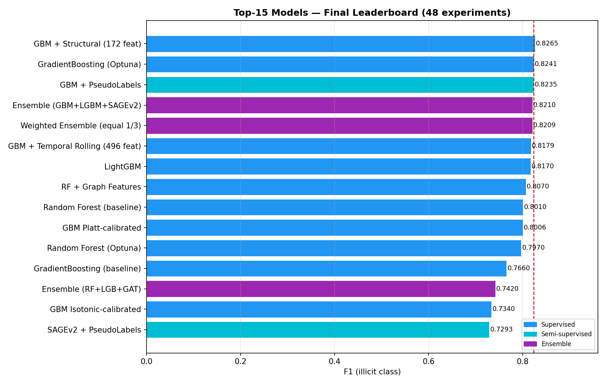
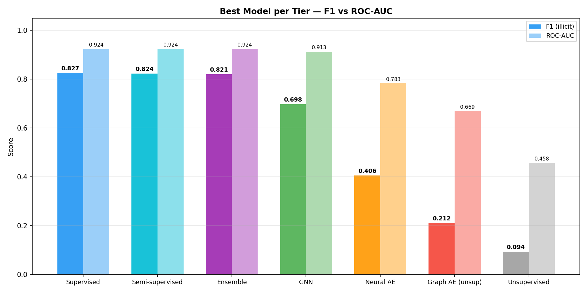
Best model per tier plotted on F1 vs ROC-AUC axes. Supervised trees dominate both dimensions.
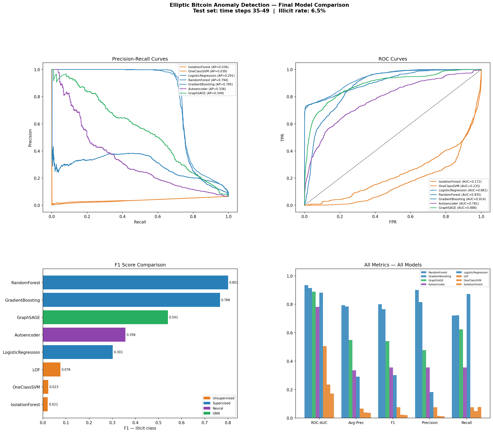
All 18 model versions across 5 rounds. Supervised tree ceiling F1≈0.82; GNNs 0.54–0.73; AE-based 0.21–0.41; Classical unsupervised below axis scale.
| Rank | Model | F1 | AUC |
|---|---|---|---|
| 1 | GBM + Structural | 0.8265 | 0.9243 |
| 2 | GBM Optuna | 0.8241 | 0.920 |
| 3 | GBM + PseudoLabels | 0.8235 | 0.924 |
| 4 | Ensemble (GBM+LGBM+SAGEv2) | 0.821 | 0.924 |
| 5 | LightGBM | 0.817 | 0.930 |
| 6 | GBM + Temporal Rolling | 0.8179 | 0.930 |
| 7 | RF + Graph Features | 0.807 | 0.942 |
| 8 | Random Forest | 0.801 | 0.935 |
| 9 | SAGEv2 + PseudoLabels | 0.7293 | 0.890 |
| 10 | GraphSAGEv2 | 0.698 | 0.913 |
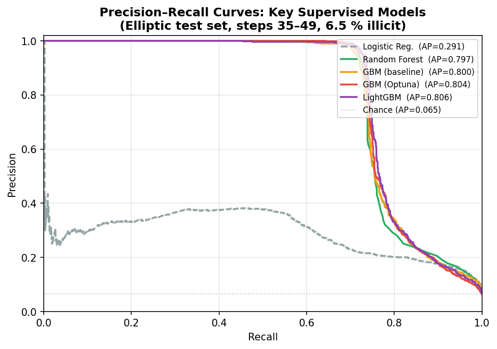
Threshold-independent comparison. Each curve sweeps all possible classification thresholds. A model in the top-right corner is good at both catching criminals AND avoiding false alarms simultaneously. GBM and RF dominate. DOMINANT (Graph AE) still shows a real curve — it has signal, just weaker.
Ensemble (GBM+LGBM+SAGEv2)
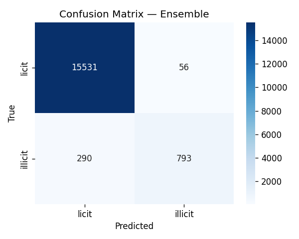
DOMINANT (Graph AE)
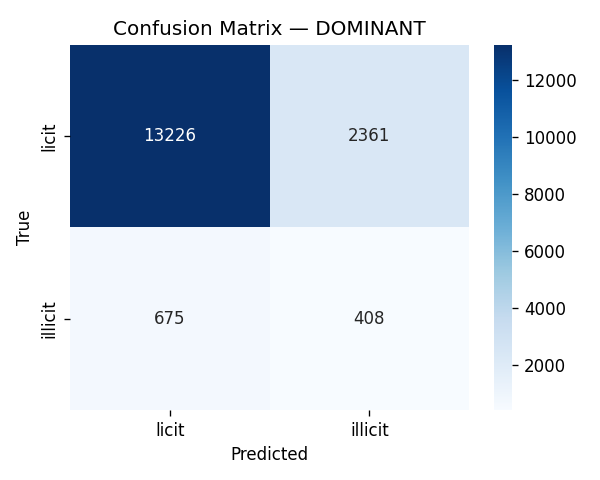
GraphSAGE baseline
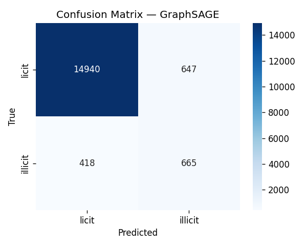
Autoencoder baseline
from src.inference import load_pipeline, score_transactions, score_from_csv
# Load best model (GBM + Structural, F1=0.8265)
pipeline = load_pipeline() # reads models/ directory
# Option A: score from DataFrames
results = score_transactions(pipeline, df_features, df_edges)
# → [txId, prob_illicit, label, risk]
# Option B: score directly from CSV files
results = score_from_csv(
features_csv="data/elliptic_txs_features.csv",
edgelist_csv="data/elliptic_txs_edgelist.csv",
output_csv="scored_transactions.csv",
)
| Paradigm | Best F1 | Best Model | Key Finding |
|---|---|---|---|
| GBM Supervised | 0.8265 | GBM + 7 topology | Structural features add reliable +0.01 F1 |
| GNN | 0.698 | GraphSAGEv2+pseudo | GAT fails on sparse graph (deg 2.3) |
| Deep AE/VAE | 0.407 | β-VAE (β=0.01) | AE score must be inverted (−MSE) |
| Graph AE (DOMINANT) | 0.212 | DOMINANT 2-layer | Best unsupervised graph; AUC=0.669 |
| Classical Anomaly | <0.08 | IsoForest/LOF/OCSVM | Illicit txs not feature-space outliers |
Supervised labels are indispensable in blockchain forensics. Illicit transactions mimic licit behavior — they are structurally normal but behaviorally criminal. No amount of unsupervised anomaly detection closes this gap. The 48-experiment benchmark quantifies the gap precisely: 0.40 vs 0.83 F1, unsupervised vs supervised.